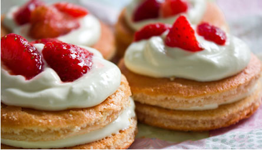

- 首頁
- >>
- 關於我們
關於我們

甜甜圈，又称多拿滋、唐纳滋，粤语称冬甩（音译自英文 Doughnut），是一种用面粉、砂糖、奶油和鸡蛋混合后经过油炸的甜食。最普遍的两种形状是中空的环状、或面团中间有包入奶油、蛋浆（卡士达）等甜馅料的封闭型甜甜圈。
在亚洲，甜甜圈主要是被当成点心类的食物，但在美国则有许多人以甜甜圈作为早餐的主食，甚至还设立了“甜甜圈日”。近期甜甜圈的口味跟种类发展十分快速，研发出形形色色的口味。
甜甜圈，又称多拿滋、唐纳滋，粤语称冬甩（音译自英文 Doughnut），是一种用面粉、砂糖、奶油和鸡蛋混合后经过油炸的甜食。最普遍的两种形状是中空的环状、或面团中间有包入奶油、蛋浆（卡士达）等甜馅料的封闭型甜甜圈。
在亚洲，甜甜圈主要是被当成点心类的食物，但在美国则有许多人以甜甜圈作为早餐的主食，甚至还设立了“甜甜圈日”。近期甜甜圈的口味跟种类发展十分快速，研发出形形色色的口味。